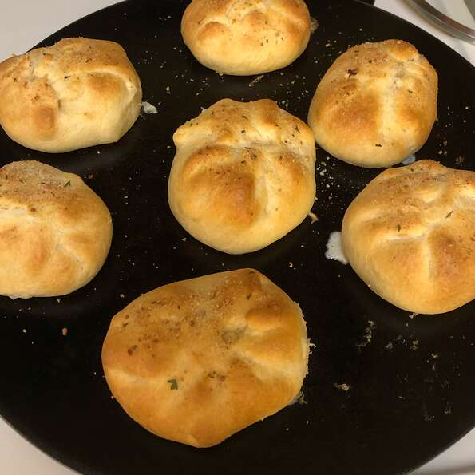

Chicken Baseballs

Description
Great for kids. You can add half to a full packet of dry ranch dressing to the filling for yet more flavor.
Ingredients
- 1 (3 ounce) package cream cheese, softened
- 1 tsp margarine
- 1/4 tsp salt
- 1/4 tsp ground black pepper
- 2 tbsp chopped onion
- 2 tbsp milk
- 2 cups cubed, cooked chicken
- 1 (8 ounce) package refrigerated crescent rolls
- 2 tbsp bread crumbs
Directions
- Preheat oven to 350 degrees
- Stir together the cream cheese, margarine, salt pepper, milk, and onions
- Fold the chicken into the cream cheese mixture
- Separate crescent rolls into 4 rectangles and smooth the perforations
- Spoon 1/2 cup of the chicken mixture into the center of each rectangle
- Fold the corners over the chicken mixture and pinch along the edges to seal into a ball shape. Arrange on a baking sheet.
- Sprinkle bread crumbs over the top of the newly formed "baseballs"
- Bake in preheated oven until browned, about 20 minutes
Home
Back to top